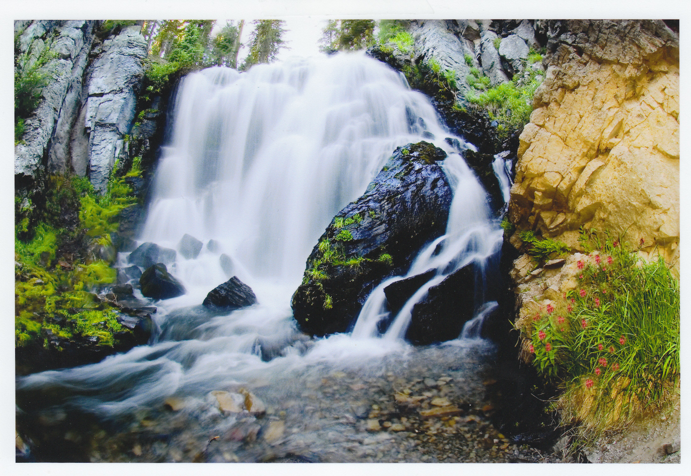
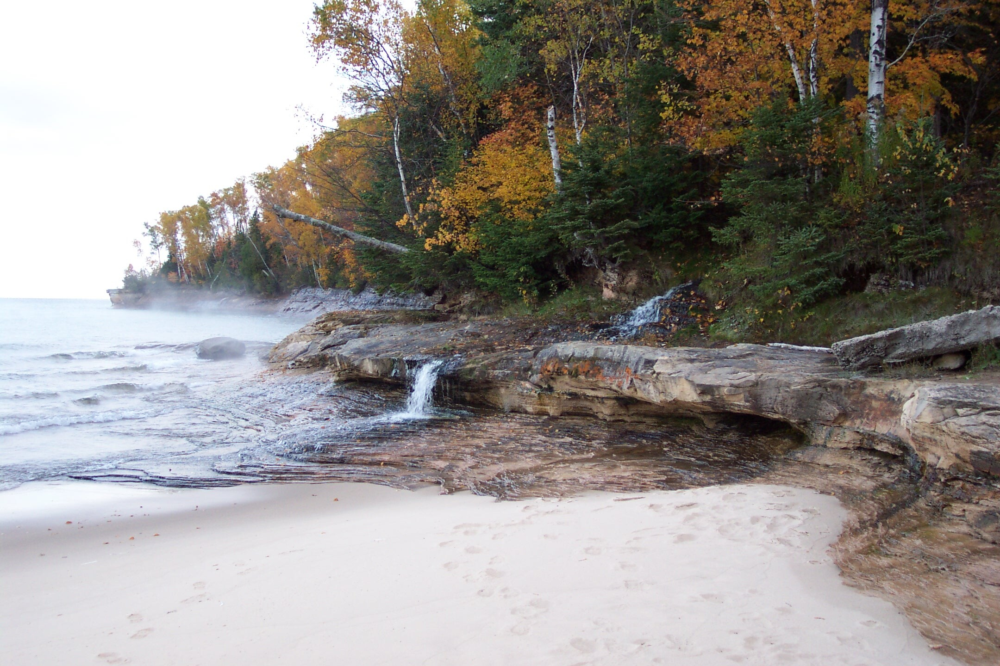
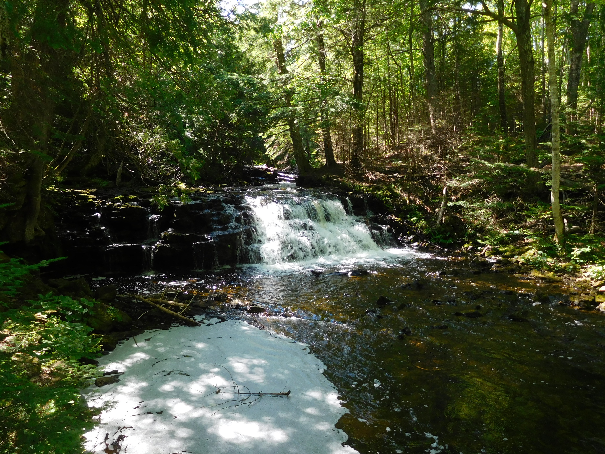

Top 5 Waterfalls To Visit
1. Kings Creek Falls
Located in Lassen Volcanic National Park. About 7300 feet. Three-mile loop trail.
2. Silver Falls

Located in Mount Rainier National Park. Loop trail is three miles and 300 feet.
3. Sable Falls

Located in Pictured Rocks National Lake Shore. 75 feet.
4. Elliot Falls
Located in Pictured Rocks National Lake Shore just like Sable Falls.
5. Mosquito Falls
Located in Michigan. 2 miles round trip.